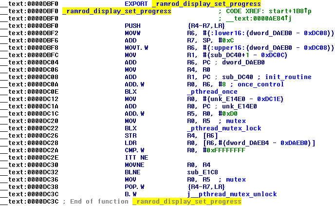
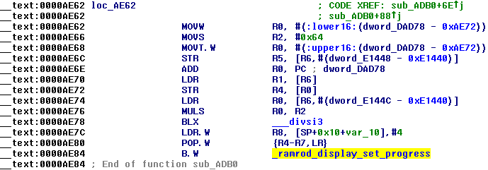

iOS restore in verbose mode
restored_external (a daemon on iOS restore ramdisk which controls restore process) prints a lot of useful debug messages. In old times (around iPhone OS 3) it always saved its log to root filesystem, but now it doesn't (must be possible to change this behaviour by patching though)Log is only accessible through serial interface (just make sure debug=0x14e and serial=3 boot-args are set) or in programs like idevicerestore in case restore failed. However it's possible to make these debug messages appear in verbose log, thanks to special patches:
Importnant note: this technique was only tested by me on iOS 6 running on iPhone 3GS
The patches imply disabling of routines in restored_external which set images on a display. First of all let's find something related to the display routines in a string pool. For example by searching for applelogo.png, this file is used by restored_external to show you Apple logo:
All these strings are referred in sub_DC840:
...which is subroutine for ramrod_display_set_progress function:

To achieve our goal we must disable all calls of this function. It's called in start:
Replace this BL by 2 NOPs (00 BF in hex):
Also it's called here:

Replace POP.W {R4-R7, LR} by POP {R4-R7, PC} (F0 BD in hex) and NOP (since POP.W {R4-R7, LR} is 4 bytes of length, but POP {R4-R7, PC} is 2 bytes):
As result this function ends and returns where it was called, which prevents ramrod_display_set_progress from being executed
Apply changes to binary and fix its code signing blob using ldid. Obviously your iBEC must pass -v boot-arg to kernel to get it working, let alone other customizations you need to make with IPSW to make booting of modified ramdisk possible